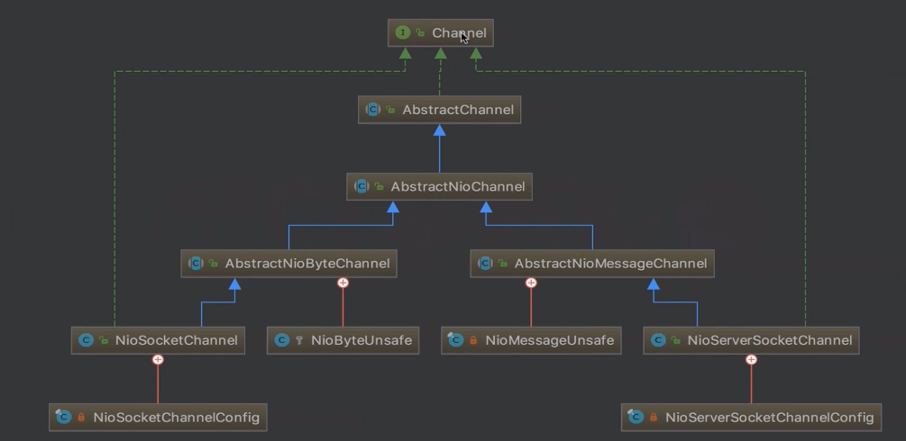

Netty新连接接入处理逻辑
检测新连接
服务端channel绑定的selector轮训出ACCEPT事件
创建NioSocketChannel
基于jdkChannel创建neety自己的NioSocketChannel,也就是客户端Channel
分配线程及注册selector
给这个客户端channel分配一个NioEventLoop,并把它注册到NioEventLoop的selector上,之后都由这个NioEventLoop进行管理
向selector注册读事件
和ACCEPT事件是同一段逻辑
1.检测新连接 NioEventLoop为检测到的ACCEPT事件创建客户端channel(NioSocketChannel)
1 2 3 4 5 6 7 8 processSelectedKey(key,channel)[入口]//NioEventLoop的run()中 | NioMessageUnsafe.read() | deReadMessage()[while循环]//对所有accept事件创建NioSocketChannel | javaChannel().accapt() 创建jdk的channel,此时把服务端channel和这个channel作为参数传入NioSocketChannel的构造函数中
2.创建NioSocketChannel 1 2 3 4 5 6 7 8 9 10 11 12 13 new NioSocketChannel(parent,ch)[入口] //创建服务端channel的时候是通过反射构建,而客户端是直接new | AbstractNioByteChannel(p,ch,op_read)//父类构造函数 | configureBlocking(false) & save op_read //把这个NioSocketChannel设置为非阻塞 //,并把op_read保存到成员变量 | create id,unsafe,pipeline //创建与此channel相关的一些组件 唯一标示,底层数据的读写,业务逻辑的载体 | new NioSocketChannelConfig() //创建与客户端channel绑定的配置类 | setTcpNoDelay(true) //禁止Nagle算法,让数据包尽可能地发出去
在selector阻塞到ioAccept事件时会调用这么个方法(io.netty.channel.socket.nio.NioServerSocketChannel#doReadMessages)
1 2 3 4 5 6 7 8 9 10 @Override protected int doReadMessages (List<Object> buf) throws Exception SocketChannel ch = javaChannel().accept(); if (ch != null ) { buf.add(new NioSocketChannel(this , ch)); return 1 ; } }
跟踪一下NioSocketChannel的构造函数
1 2 3 4 public NioSocketChannel (Channel parent, SocketChannel socket) super (parent, socket); config = new NioSocketChannelConfig(this , socket.socket()); }
先跟踪1.调用父类构造函数这一步
1 2 3 4 5 6 7 8 9 10 11 12 13 14 15 16 17 18 protected AbstractNioByteChannel (Channel parent, SelectableChannel ch) super (parent, ch, SelectionKey.OP_READ); } --- protected AbstractNioChannel (Channel parent, SelectableChannel ch, int readInterestOp) super (parent); this .ch = ch; this .readInterestOp = readInterestOp; ch.configureBlocking(false ); } --- protected AbstractChannel (Channel parent) this .parent = parent; id = newId(); unsafe = newUnsafe(); pipeline = newChannelPipeline(); }
再看一下2.创建与客户端channel绑定的配置
1 2 3 4 5 6 7 8 9 10 11 config = new NioSocketChannelConfig(this , socket.socket()); --- public DefaultSocketChannelConfig (SocketChannel channel, Socket javaSocket) super (channel); this .javaSocket = javaSocket; if (PlatformDependent.canEnableTcpNoDelayByDefault()) { setTcpNoDelay(true ); } }
Nagel算法:让小数据包集成为大数据包后发送
1 2 3 4 5 6 @Override public SocketChannelConfig setTcpNoDelay (boolean tcpNoDelay) javaSocket.setTcpNoDelay(tcpNoDelay); return this ; }
Netty中的Channel的分类
Channel的层级关系 
左边是客户端channel,右边是服务端channel
Channel
AbstractChannel
AbstractNioChannel
Unsafe
服务端和客户端各自对应的Unsafe不同,前者是NioByteUnsafe,后者时NioMessageUnsafe
Unsafe是channel读写操作的抽象
服务端channelAbstractNioMessageChannel#newUnsafe中返回了NioMessageUnsafedoReadMessages()为他创建nioSocketChannel(客户端channel)
客服端channelAbstractNioByteChannel#newUnsafe中返回了NioByteUnsafe,
它的read方法会通过doReadBytes()读取数据,放入一个byteBuf中
ChannelConfig
3.新连接NioEventLoop分配和selector注册 目的是给这个客户端channel分配一个NioEventLoop,并把它注册到NioEventLoop的selector上,之后都由这个NioEventLoop的selector进行管理
回到NioEventLoop调用的read(),首先在上一步中它通过doReadMessages()为ACCEPT创建nioSocketChannel(客户端channel)之后通过一下步骤把客户端channel注册到当前nioEventLoop的selector中:
\AbstractNioMessageChannel.NioMessageUnsafe#read
1 2 3 4 5 int size = readBuf.size(); for (int i = 0 ; i < size; i ++) { readPending = false ; pipeline.fireChannelRead(readBuf.get(i)); }
这个pipeline是什么? 在这里回顾一下服务端channel被构造时的步骤
1 2 3 4 5 6 7 8 9 init()[初始化服务端Channel] //io.netty.bootstrap.ServerBootstrap#init | set ChannelOptions,ChannelAttrs //配置用户自定义的服务端配置 | set childOption,childAttr //配置用户自定义的连接配置,为每个新连接都配置 | config handler [配置服务端pipeline] //用户代码中通过.handler()设置的部分 | add ServerBootstrapAcceptor[添加连接器] //添加一个给accept用的NIO的线程
在这最后一步中会执行这么一段
1 2 3 pipeline.addLast(new ServerBootstrapAcceptor( currentChildGroup, currentChildHandler, currentChildOptions, currentChildAttrs));
这个ServerBootstrapAcceptor又是什么呢? 服务端Channel的pipeline由3个handler构成:
1 head -> ServerBootstrapAcceptor -> Tail
而这个pipeline.fireChannelRead(readBuf.get(i));这一行会去调用head,然后由head调用ServerBootstrap.ServerBootstrapAcceptor#channelRead方法
那么pipeline.fireChannelRead()最终会干些什么?
添加childHandler
设置options和attrs
选择NioEventLoop并注册selector
1.添加childHandler 看一下源码
1 2 3 4 5 6 @Override @SuppressWarnings ("unchecked" )public void channelRead (ChannelHandlerContext ctx, Object msg) final Channel child = (Channel) msg; child.pipeline().addLast(childHandler);
这个childHandler是在用户代码中通过以下添加的:
1 2 3 4 5 6 .childHandler(new ChannelInitializer<SocketChannel>() { @Override public void initChannel (SocketChannel ch) ch.pipeline().addLast(new AuthHandler()); } });
实际上添加的是一个ChannelInitializer,它暴露了一个initChannel(),从而让用户自定义handler.而ChannelInitializer在每次添加完handler之后它会将自身进行删除.看一下ChannelInitializer的源码
1 2 3 4 5 6 7 8 9 10 11 12 13 14 15 16 17 18 19 20 @Override public void handlerAdded (ChannelHandlerContext ctx) throws Exception if (ctx.channel().isRegistered()) { initChannel(ctx); } } --- private boolean initChannel (ChannelHandlerContext ctx) throws Exception if (initMap.putIfAbsent(ctx, Boolean.TRUE) == null ) { try { initChannel((C) ctx.channel()); } catch (Throwable cause) { exceptionCaught(ctx, cause); } finally { remove(ctx); } return true ; } return false ; }
2.设置options和attrs 继续看channelRead(),这两个也都是在init()中构建ServerBootstrapAcceptor时传入的
1 2 3 4 5 6 7 8 9 10 11 12 13 14 15 16 17 18 19 @Override public void channelRead (ChannelHandlerContext ctx, Object msg) final Channel child = (Channel) msg; child.pipeline().addLast(childHandler); for (Entry<ChannelOption<?>, Object> e: childOptions) { if (!child.config().setOption((ChannelOption<Object>) e.getKey(), e.getValue())) { logger.warn("Unknown channel option: " + e); } } for (Entry<AttributeKey<?>, Object> e: childAttrs) { child.attr((AttributeKey<Object>) e.getKey()).set(e.getValue()); } }
3.选择NioEventLoop并注册selector 继续看channelRead
1 2 3 4 5 6 7 8 9 10 11 12 13 14 15 @Override public void channelRead (ChannelHandlerContext ctx, Object msg) childGroup.register(child).addListener(new ChannelFutureListener() { @Override public void operationComplete (ChannelFuture future) throws Exception if (!future.isSuccess()) { forceClose(child, future.cause()); } } }); }
childGroup.register(child)的这一步它会调用(MultithreadEventLoopGroup#register):
1 2 3 4 @Override public ChannelFuture register (Channel channel) return next().register(channel); }
而这个next(),会调用MultithreadEventExecutorGroup#next
1 2 3 4 @Override public EventExecutor next () return chooser.next(); }
也就是说我们会通过线程选择器选出一个NioEventLoop,并调用它的register(),把客户端channel(NioSocketChannel)注册进去
看一下这个register()是怎样的一个步骤
1 2 3 4 5 6 7 8 9 10 11 12 13 14 15 16 17 18 19 20 21 22 23 24 25 26 27 28 29 30 31 32 33 34 35 @Override public ChannelFuture register (Channel channel) return register(new DefaultChannelPromise(channel, this )); } --- @Override public ChannelFuture register (final ChannelPromise promise) promise.channel().unsafe().register(this , promise); return promise; } ---io.netty.channel.AbstractChannel.AbstractUnsafe#register @Override public final void register (EventLoop eventLoop, final ChannelPromise promise) AbstractChannel.this .eventLoop = eventLoop; if (eventLoop.inEventLoop()) { register0(promise); } else { eventLoop.execute(new Runnable() { @Override public void run () register0(promise); } }); } } --- private void register0 (ChannelPromise promise) boolean firstRegistration = neverRegistered; doRegister(); }
看来最终会调用AbstractNioChannel#doRegister进行注册
1 2 3 4 5 6 7 8 9 10 11 12 @Override protected void doRegister () throws Exception boolean selected = false ; for (;;) { try { selectionKey = javaChannel().register(eventLoop().selector, 0 , this ); return ; } } }
4.向selector注册读事件 其实是和ACCEPT事件同一段逻辑,继续看上一步骤执行register的部分AbstractChannel.AbstractUnsafe#register0
1 2 3 4 5 6 7 8 9 10 11 12 13 14 15 16 17 18 19 20 private void register0 (ChannelPromise promise) boolean firstRegistration = neverRegistered; doRegister(); neverRegistered = false ; registered = true ; pipeline.invokeHandlerAddedIfNeeded(); safeSetSuccess(promise); pipeline.fireChannelRegistered(); if (isActive()) { if (firstRegistration) { pipeline.fireChannelActive(); } else if (config().isAutoRead()) { beginRead(); } } }
此时的pipeline.fireChannelActive();会调用head最终会调用DefaultChannelPipeline.HeadContext#channelActive
1 2 3 4 5 6 7 8 9 10 11 12 13 14 15 16 17 18 19 20 21 22 23 24 25 26 @Override public void channelActive (ChannelHandlerContext ctx) throws Exception ctx.fireChannelActive(); readIfIsAutoRead(); } --- private void readIfIsAutoRead () if (channel.config().isAutoRead()) { channel.read(); } } --- @Override public Channel read () pipeline.read(); return this ; } --- @Override public final ChannelPipeline read () tail.read(); return this ; }
这个read最终会调用unsafeNioSocketChannelUnsafe的beginRead
1 2 3 4 @Override public void read (ChannelHandlerContext ctx) unsafe.beginRead(); }
而他最终调用的是AbstractNioChannel#doBeginRead,一个服务端channel创建时也会执行的一个方法.
1 2 3 4 5 6 7 8 9 10 11 @Override protected void doBeginRead () throws Exception final SelectionKey selectionKey = this .selectionKey; readPending = true ; final int interestOps = selectionKey.interestOps(); if ((interestOps & readInterestOp) == 0 ) { selectionKey.interestOps(interestOps | readInterestOp); } }
几个问题
Netty是在哪里检测到有新连接接入的?
新连接是怎样注册到NioEventLoop线程的?
Boss线程通过NioEventGroup的chooser的next()方法,选出一个NioEventLoop,然后将这条新连接注册到NioEventLoop的selector上